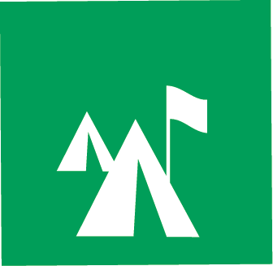
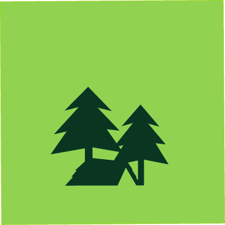
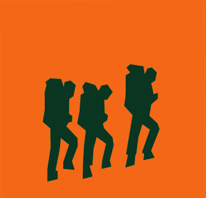
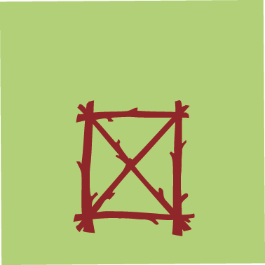
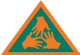
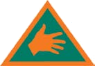

· 2026–27
Our Cubs yearstarts here!
The calendar, a few useful links and ways to explore the Cub programme.
Our regular meeting
Tuesdays
6:30 to 8:00 pm
BE ✳
Pin this to the fridge
Our 2026–27 trail map!
Cubs meet
Special event
Review and planning
Sixer / Seconder
No meeting
Tuesday meetings are 6:30–8:00 pm unless the calendar says otherwise. Dates may change as the year goes on.
Turn on JavaScript to use the month view. You can still open the calendar PDF .
A Cub’s personal journey
Badges, skills & awards!
Four ways to try things, learn by doing and celebrate progress.
The Cub journey
Personal Progress
Stage badges celebrate the adventures and challenges Cubs take on as they grow.
Our parent explainer →




Learn by doing
Adventure Skills
Cubs can pick Adventure Skills badges to work on independently, with practice at home. Our meetings help support their progress.
Our parent explainer →


Make it your own
Special Interest Badges
Cubs choose something they enjoy or want to try and make a small project of it.
Our parent explainer →
A final-year challenge
Chief Scout Award
A final-year challenge combining personal interests, Adventure Skills, a long hike and an overnight cultural exchange.
Our parent explainer →
Badge artwork © Scouting Ireland.
🐾
Keep these handy
Parent links
🧭
The Cub journey
Personal Progress
Cubs earn the Turas, Taisteal and Tagann stage badges as they take part in adventures, try challenges and talk about what they learned.
SPICES is Scouting Ireland’s name for six areas of growth: social, physical, intellectual, character, emotional and spiritual. These are part of the Cub journey, rather than a separate badge to earn.
🏅
A final-year challenge
Chief Scout Award
The award must be started and completed in a Cub’s final year. It takes at least six months and brings together four Special Interest Badges, Adventure Skills (two to Stage 2 and one to Stage 3), a 20 km expedition and a two-day, one-night residential with an intercultural activity.
A Scouter can help your Cub understand the requirements and plan the challenge at a pace that works for them.
⛺
Learn by doing
Adventure Skills
Cubs can choose which Adventure Skills badges to work on and practise at their own pace—including some at-home practice, a little Scouting “homework.”
Our activities will support and complement the skills Cubs are working on, and we’ll do our best to weave those skills into the programme. The app can help your Cub explore stages; their Scouter can advise what to try next.
⭐
Make it your own
Special Interest Badges
A Cub picks something they like or want to learn about, then agrees a small project with a Scouter. It could be a sport, cooking, music, nature, helping in the community or something else they care about.
The point is to explore an interest, learn something and have a go. It is about the Cub’s effort and progress, not being an expert.
🧵
Uniform help
Badges have specific places on the Cub uniform. Before sewing a new one on, check the diagram or bring it along to a meeting and ask a Scouter to help with the placement.
The official diagram shows the front and back of the Cub uniform and where each badge goes.
Local variation: an illustrative Patrol patch marker sits below the seam on the wearer’s right sleeve, above the Adventure Skills badges. Diagram © Scouting Ireland · Open original PDF ↗